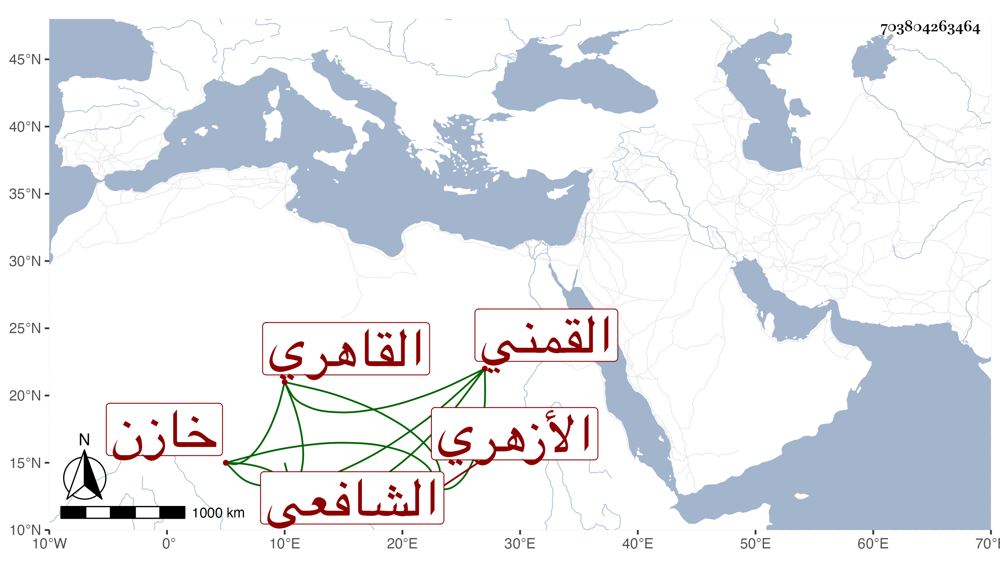

0902Sakhawi.DawLamic.ITO20230111-ara1.EIS1600.703804263464
Biography ID: 703804263464
876
محمد بن إبراهيم بن خلف الشمس القمني ثم القاهري الأزهري الشافعي خازن كتب المؤيد ويعرف بالقمني . مات بعد أن كف ولزم بيته مديدة في يوم الأربعاء رابع عشري رجب سنة ثلاث وثمانين عن نحو الثمانين ، وكان ممن حضر عند القاياتي وابن المجدي وشيخنا وتردد إلى الأعيان كابن البارزي وابن العطار وكتب بخطه أشياء ونسب إليه تفريط في بعض كتب المؤيدية فطلبه الدوادار الكبير قبيل موته بيسير في حال انقطاعه وأقام ببابه مرسما عليه أياما حتى شفع فيه بعد جمع ما كان عوده كالمعتذر بل المستحيل وهو المحضر لشيخنا مراسلة البقاعي من سفره إلى القاياتي وأيام قضائه وفيها التعريض بشيخنا لمزيد اختصاص صاحب الترجمة بالقاياتي وبنيه حيث اختلسها من بيته فأمره شيخنا بعودها إلى محلها رحمه الله وعفا عنه .
